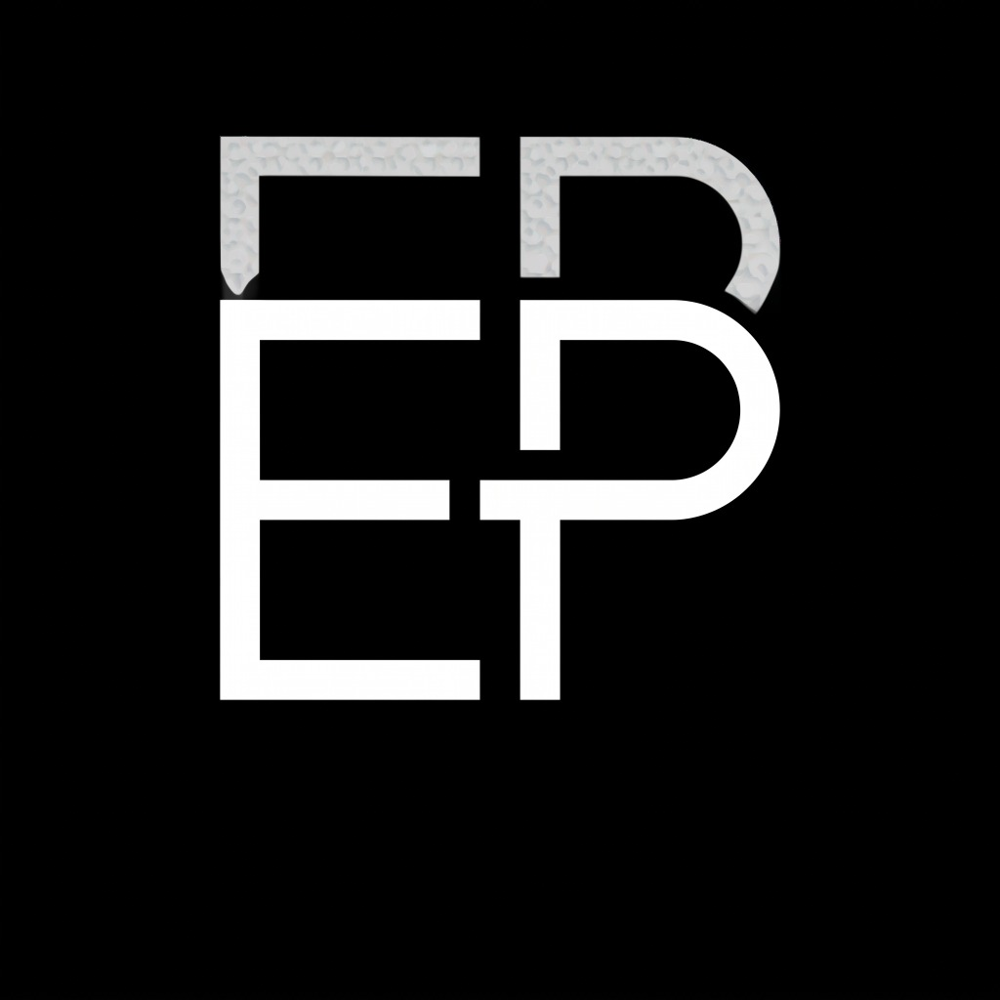
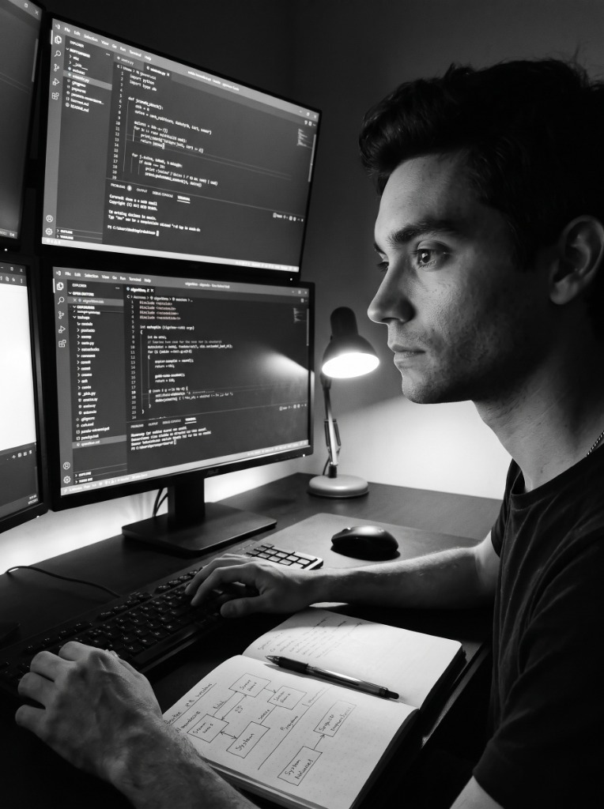
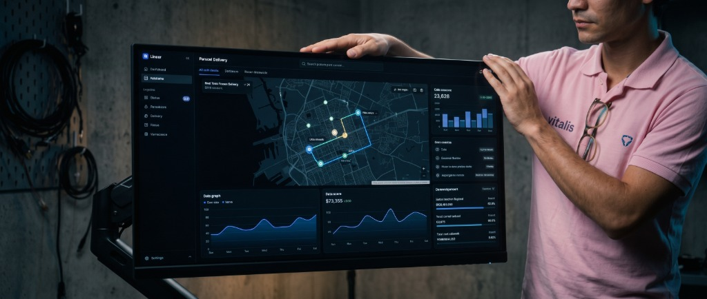

01
Pensar y Formular
Comprender el problema fundamental, sus fronteras y restricciones físico-matemáticas antes de proponer código.
Initializing

ELIEZER PRIETOIngeniero de Software · Modelador de Sistemas · Profesional Multidisciplinario
Estudiante simultáneo de 3 carreras universitarias: Ingeniería de Software (UCDB), Ciencias Económicas y Pedagogía (UniFatecie). Forjado en el rigor de las ciencias exactas y la física nuclear (InSTEC), con disciplina analítica y ejecución operativa.
La trayectoria
03
carreras simultáneas
Convergencia
Ingeniería de Software · Ciencias Económicas · Pedagogía.
De la rigurosa formación en física nuclear y matemáticas avanzadas a la arquitectura de software modular, la estructuración de costos y el liderazgo formativo.
Cómo se construye el trabajo
› definiendo el problema, sus límites y restricciones físico-matemáticas
01
Comprender el problema fundamental, sus fronteras y restricciones físico-matemáticas antes de proponer código.
02
Modelar el sistema: modularidad, estructuras de datos óptimas, esquemas relacionales y análisis asintótico de algoritmos.
03
Convertir las decisiones en software robusto: Python, C++, SQL, desarrollo web modular y control de versiones con Git.
04
Todo sistema tiene un coste. Evaluar la viabilidad económica, costos operativos (CBO 2512-05) y eficiencia de recursos.
05
El software que no se enseña se degrada. Documentar con claridad pedagógica, capacitar equipos y facilitar la evolución técnica.
Experiencia
De las ciencias exactas y la ingeniería nuclear a la arquitectura de software, el análisis económico de costos y la pedagogía técnica.

01 / 06
Casos de estudio
Estructuración y operación de una startup de logística y paquetería desde cero.

Startup de logística de paquetería y envíos puerta a puerta en un entorno de alta restricción de insumos y sin sistemas tecnológicos previos.
Operación a escala
El desafío
Estructurar una red de entregas viable en un mercado con severas limitaciones operativas, sin infraestructura tecnológica preexistente y con alta volatilidad económica.
Lo que hice
El resultado
Modelado de algoritmos, persistencia relacional y modularidad de sistemas en la UCDB.
Desarrollo continuo de soluciones de software basadas en principios formales de ciencias de la computación: estructuras de datos, programación orientada a objetos, bases de datos SQL y Git.
Enfoque técnico
El desafío
Diseñar sistemas de software modulares que equilibren eficiencia computacional (tiempo y espacio), bajo acoplamiento y alta mantenibilidad en código.
Lo que hice
El resultado
3 años de formación universitaria en el Instituto Superior de Tecnologías y Ciencias Aplicadas (Cuba).
Formación en una de las disciplinas científicas de mayor rigor del planeta: física matemática, cálculo diferencial multivariable, termodinámica técnica y mecánica de fluidos.
Rigor científico
El desafío
Modelar sistemas no lineales, resolución de ecuaciones diferenciales complejas y comportamiento de fluidos bajo condiciones extremas sin margen de error.
Lo que hice
El resultado
Trayectoria previa (2017 — 2023): coordinación y experiencias guiadas trilingües en Civitatis y GuruWalk.
Una etapa fundamental previa que forjó mi resiliencia en terreno, gestión de imprevistos en tiempo real y comunicación intercultural en español, inglés y portugués con miles de personas de todo el mundo.
Métricas de liderazgo en campo
El desafío
Gestionar contingencias humanas, climáticas y de transporte en tiempo real, manteniendo la seguridad, la excelencia y la empatía con audiencias internacionales multiculturales.
Lo que hice
El resultado
Tours y Evaluaciones Verificadas en Civitatis
Rigor Académico y Verificación
Formaciones Universitarias Activas (Simultáneas)
UCDB · BRASIL
Arquitectura modular, ciclo de vida del software, algoritmos, bases de datos y buenas prácticas de sistemas.
UNIFATECIE · BRASIL
Econometría, análisis presupuestario, cálculo de costos operativos, macro y microeconomía matemática.
UNIFATECIE · BRASIL
Psicología del aprendizaje, diseño instruccional y metodologías para la transmisión efectiva de conocimientos técnicos.
Microcredenciales Oficiales y Certificados de Curso
Microcertificación universitaria oficial acreditando competencias en análisis financiero presupuestario, costos directos/indirectos y viabilidad de operaciones.
Fundamentos de contabilidad aplicada, estados contables, balance patrimonial, análisis de flujos de caja y salud económica organizacional.
Estrategias de comunicación profesional en organizaciones, redacción técnica asertiva, retroalimentación constructiva y transmisión didáctica de mensajes.
Estructuración analítica de datos en hojas de cálculo, operadores matemáticos y lógicos, fórmulas avanzadas y tabulación de modelos de datos.
Fuera de la jornada
Lectura científica, modelación matemática aplicada, filosofía humanística y la búsqueda constante de resolver problemas de alto impacto.
Contacto